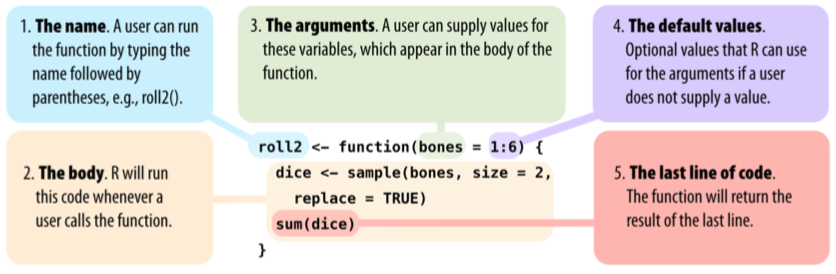

6.2 Funciones
El comando function en R le permite al usuario crear programas o rutinas para realizar tareas específicas. La sintanxis de function es:
En esta sintanxis, mifun es el nombre que el usuario desea darle a la función. Los objetos x, y, ... son argumentos de entrada para la función. Entre llaves { } se escriben líneas de código R donde se deben utilizar o transformar los objetos x, y, ... en algún otro objeto o gráfico. La última expresión del código debe imprimir el resultado. La siguiente figura, tomada de Grolemund (2014), muestra los aspectos relevantes al crear una función con function:

Figura 6.1: Aspectos relevantes de una función en R (Grolemund, 2014)
6.2.1 Un ejemplo
Suponga que se busca crear una función que cuente el número valores “not a number” (NaN) contenidos en un vector. Una función que hace esto es la siguiente:
# Se crea una funcion que cuente NaN's en un vector:
cuenta_nan <- function(x){
donde.nan <- is.nan(x) # se crea vector logico indicando donde hay NaN
sum( donde.nan ) # al sumar el vector logico, se cuenta los NaN
}Luego de creada, la función cuenta_nan se puede usar como cualquier otro comando de R. A continuación se crea un vector con algunos NaN’s para luego probar la nueva función:
w <- c(45, 10, NaN, 34, NaN, NaN, -10) # se crea vector con tres NaN's
cuenta_nan(x = w) # se usa la funcion[1] 36.2.2 Controlando el objeto de salida
Suponga ahora que usted quiere que la función cuenta_nan entregue dos números, el conteo de NaN y la proporción de NaN la cual se obtiene diviendo el conteo por el número total de elemento en el vector. Como se requiere entregar dos números, usted debe seleccionar en que objeto entregar estos dos números. Una primera opción puede ser entregar los dos números en un vector que tenga etiquetas:
# Se crea una funcion que cuente NaN's en un vector
# y que entregue un vector:
cuenta_nan <- function(x){
donde.nan <- is.nan(x) # se crea vector logico indicando donde hay NaN
n_nan <- sum( donde.nan ) # al sumar el vector logico, se cuenta los NaN
p_nan <- n_nan/length(x) # se calcula la proporcion:
c(n = n_nan, p = p_nan) # se entrgan las dos cantidades en un vector
}
# Se prueba la funcion:
cuenta_nan(x = w) n p
3.0000000 0.4285714 Otra opción, quizas más conveniente por el tema del número de decimales, es entregar los dos números en un data.frame :
# Se crea una funcion que cuente NaN's en un vector
# y que entregue un data.frame:
cuenta_nan <- function(x){
donde.nan <- is.nan(x) # se crea vector logico indicando donde hay NaN
n_nan <- sum( donde.nan ) # al sumar el vector logico, se cuenta los NaN
p_nan <- n_nan/length(x) # se calcula la proporcion:
data.frame(n = n_nan, p = p_nan) # se entrgan las dos cantidades en un data.frame
}
# Se prueba la funcion:
cuenta_nan(x = w) n p
1 3 0.42857146.2.3 Argumentos por defecto
Suponga ahora que usted quiere controlar el número de decimales con el cuál se imprime la proporción calculada. Para esto, se puede incluir un segundo argumento que controle este aspecto:
# Se crea una funcion que cuente NaN's en un vector y que entregue un data.frame:
cuenta_nan <- function(x, dec = 2){
donde.nan <- is.nan(x) # se crea vector logico indicando donde hay NaN
n_nan <- sum( donde.nan ) # al sumar el vector logico, se cuenta los NaN
p_nan <- round(n_nan/length(x), dec) # se calcula la proporcion
data.frame(n = n_nan, p = p_nan) # se entrgan las dos cantidades en un data.frame
}
# Se prueba la funcion y se controla el nro. de decimales a 3:
cuenta_nan(x = w, dec = 3) n p
1 3 0.429Note que el 2do. argumento que se incluyó, dec, se le asignó el valor 2 desde la misma creación de la función. De esta forma se establece un argumento por defecto. Si el usuario no usa este argumento, la función asumiará un valor de 2 por defecto.
n p
1 3 0.436.2.4 Entregando texto variable
Continuando con el mismo ejemplo, suponga que la salida de la función cuenta_nan debe entregar una cadena de texto que diga algo como: La cantidad de NaN's es 3. Los comandos paste y paste0 permiten pegar elementos de diferente tipo (texto o números) y entregar una sóla cadena de texto. Aquí un ejemplo:
# Se crea una funcion que cuente NaN's en un vector y que entregue texto:
cuenta_nan <- function(x){
donde.nan <- is.nan(x) # se crea vector logico indicando donde hay NaN
n_nan <- sum( donde.nan ) # al sumar el vector logico, se cuenta los NaN
paste0('La cantidad de NaN es: ', n_nan)
}
# Se prueba la funcion:
cuenta_nan(x = w)[1] "La cantidad de NaN es: 3"6.2.5 Argumentos lógicos
El comando ifelse permite entregar uno de dos resultados dependiendo de si una condición se cumple (TRUE) o no (FALSE). Aquí un ejemplo:
[1] "Gana"El comando ifelse es vectorizado, esto quiere decir que puede hacer su trabajo elemento por elemento dentro de un vector:
# Ejemplo de uso del comando ifelse:
x <- c(4.5, 1.2, 2.5, 3.1, 3.9)
ifelse(x > 3, 'Gana', 'Pierde')[1] "Gana" "Pierde" "Pierde" "Gana" "Gana" Volviendo a la función cuenta_nan, suponga que usted desea controlar, si la proporción de NaN’s se entrega como una fracción entre 0 y 1 o se entrega como porcentaje, es decir, entre 0 y 100. Para hacer esto se puede agregar un argumento lógico a la función que determine si se hace un cálculo u otro:
# Se crea una funcion que cuente NaN's en un vector y que entregue un data.frame:
cuenta_nan <- function(x, dec = 2, pct = F){
donde.nan <- is.nan(x) # se crea vector logico indicando donde hay NaN
n_nan <- sum( donde.nan ) # al sumar el vector logico, se cuenta los NaN
p_nan <- round(n_nan/length(x), dec) # se calcula la proporcion
p_nan <- ifelse(pct, p_nan*100, p_nan) # Porcentaje o fraccion?
data.frame(n = n_nan, p = p_nan) # se entrgan las dos cantidades en un data.frame
}
# Se prueba la funcion, se controla el nro. de decimales a 3
# y que el calculo de la proporcion se entrega como porcentaje:
cuenta_nan(x = w, dec = 3, pct = T) n p
1 3 42.96.2.6 Documentación de la función
Es importante que la función incluya comentarios que le ayuden a entender a cualquier usuario como se usa. Aspectos que esta documentación debe incluir son:
- Fecha o versión y autor: Fecha de creación o algo alusivo a su momento de creación.
- Descripción: Una breve descripción de lo que hace la función o para que sirve.
- Argumentos: Cuales son sus argumentos y que tipo de valor (p.e., vector, matriz, data.frame, una fecha, un valor lógico, etc.) toma cada uno.
- Valor: Que tipo de objeto entrega la función y cual es o como se organiza su contenido.
- Ejemplo de uso: Un ejemplo para ayudar al usuario a utilizar la función.
Enseguida se incluyen estos cinco aspectos para la función cuenta_nan:
# Se crea una funcion que cuente NaN's en un vector y que entregue un data.frame:
cuenta_nan <- function(x, dec = 2, pct = F){
# Version: 3.0 | fecha: sep 2019 | Autor: paguzmang
# Descripcion:
# Esta funcion cuenta el nro. de NaN en un vector. Entrega tanto
# el nro. de NaN's como su proporcion.
# Argumentos:
# x = vector que se desea evaluar.
# dec = nro. de decimales para reportar la proporcion de NaN.
# Por defecto 2 decimales.
# pct = Logico. Indica si la proporcion de NaN's se reportara como
# fraccion entre 0 y 1 (FALSE, por defecto) o
# como porcentaje (entre 0 y 100) (TRUE).
# Codigo:
donde.nan <- is.nan(x) # se crea vector logico indicando donde hay NaN
n_nan <- sum( donde.nan ) # al sumar el vector logico, se cuenta los NaN
p_nan <- round(n_nan/length(x), dec) # se calcula la proporcion
p_nan <- ifelse(pct, p_nan*100, p_nan) # Porcentaje o fraccion?
data.frame(n = n_nan, p = p_nan) # se entrgan las dos cantidades en un data.frame
# Valor:
# la funcion entrega un data.frame con una fila y dos columnas
# que incluyen el nro. de NaN's y la proporcion NaN's (o porcentaje)
# Ejemplo de uso:
# datos <- c(10, 23, NaN, -2, 4, NaN)
# cuenta_nan(x = datos, pct = T)
}Es cierto que documentar un programa puede resultar tedioso pero es una tarea fundamental de cualquier programador y algoritmo. Si las funciones que usted esta creando serán usadas de manera rutunaria por muchos usuarios o esta creando un paquete o programa grande (conjunto de varias rutinas), entonces la documentación descrita arriba es obligatoria. No obstante, muchas veces creamos funciones para un uso inmediato y por una sóla persona (usted mismo); en este caso, podríamos omitir la mayoría de esta documentación. Como recomendación debería siempre incluir: la fecha de creación, la descripción de la función y de los argumentos.
6.2.7 Compartiendo la función
Algunas opciones para compartir su función o funciones son:
Como un archivo
.RData: Dado que una función es un objeto más, usted puede guardar (con el comandosave) su función como un archivo.RDatay solicitar al usuario que cargue su función usando el comandoload.Como un script
.R: También puede poner todo el código de su función en un script (archivo.R) y compartir este archivo. En este caso, el usuario puede cargar su función usando el comandosource. Este comando toma como primer argumento (y el único obligatorio) el nombre o ruta al archivo.R. Esta ruta puede ser local (en el computador) o puede ser una direcciónurl. Esta opción es interesante puesto que usted puede alojar su archivo.Ren algún servidor y proveer la dirección del archivo en internet para que cualquier usuario pueda cargar su función.Paquete: Un paquete es un conjunto de funciones (o comandos). Usted puede crear un paquete y utilizar las opciones que tiene R para publicar paquetes. Otros lenguajes de programación, tales como Python, tienen también la opción de juntar varias funciones en un paquete y realizar su debida publicación. Este curso no incluye la creación de paquetes.
A continuación se muestran ejemplos de las dos primeras opciones:
6.2.7.1 Compartiendo la función en un .RData
Primero debemos guardar la función en un archivo .RData. Esto se puede hacer con el comando save. Suponiendo que la función cuenta_nan ya esta creada en el espacio de trabajo:
# Se guarda la funcion en un archivo .RData del mismo nombre:
save(cuenta_nan, file = 'cuenta_nan.RData')El archivo cuenta_nan.RData quedo guardado en el directorio de trabajo actual. Ahora suponga que usted compartio este archivo con otro usuario, p.e., por correo electrónico. Dicho usuario debe poner este archivo en su directorio de trabajo y utilizar el comando load para cargar la función:
character(0)# Se carga la funcion:
load('cuenta_nan.RData')
# Se verifica que objetos tiene el directorio de trabajo
# despuede correr load:
ls()[1] "cuenta_nan" n p
1 2 0.56.2.7.2 Compartiendo la función en un script .R
6.2.7.2.1 Cargando el archivo localmente
Primero debemos poner todo el código de la función en un archivo .R. Esto se puede hacer copiando y pegando el código en un nuevo archivo .R. Se recomienda nombrar este nuevo archivo con el mismo nombre de la función o uno parecido. Para este ejemplo supongamos que el archivo se nombró como cuenta_nan.R y que usted compartió este archivo con otro usuario, p.e., por correo eletrónico. Este nuevo usuario debe poner el archivo cuenta_nan.R en su directorio de trabajo y cargar la función con el comando source:
character(0)# Se carga la funcion:
source('cuenta_nan.R')
# Se verifica que objetos tiene el directorio de trabajo
# despuede correr source:
ls()[1] "cuenta_nan" n p
1 2 0.56.2.7.2.2 Cargando el archivo desde internet:
Usted también puede alojar el archivo .R en algún servidor o repositorio de internet. Por ejemplo, el sitio github le permite tener una cuenta y crear repositorios donde usted puede alojar archivos que eventualmente puede compartir. Para este ejemplo, el archivo cuenta_nan.R se subió a un repositorio de github y se puede acceder a él desde siguiente enlace: https://raw.githubusercontent.com/paguzmang/funciones/master/cuenta_nan.R. Conociendo esto, el usuario puede cargar su función directamente desde este repositorio en internet usando el comando source:
character(0)# Se carga la funcion (requiere conexion a internet):
source('https://raw.githubusercontent.com/paguzmang/funciones/master/cuenta_nan.R')
# Se verifica que objetos tiene el directorio de trabajo
# despuede correr source:
ls()[1] "cuenta_nan" n p
1 2 0.5Referencias
Grolemund, G. (2014). Hands-on Programming with R: Write your own functions and simulations. O’Reilly Media, Inc.